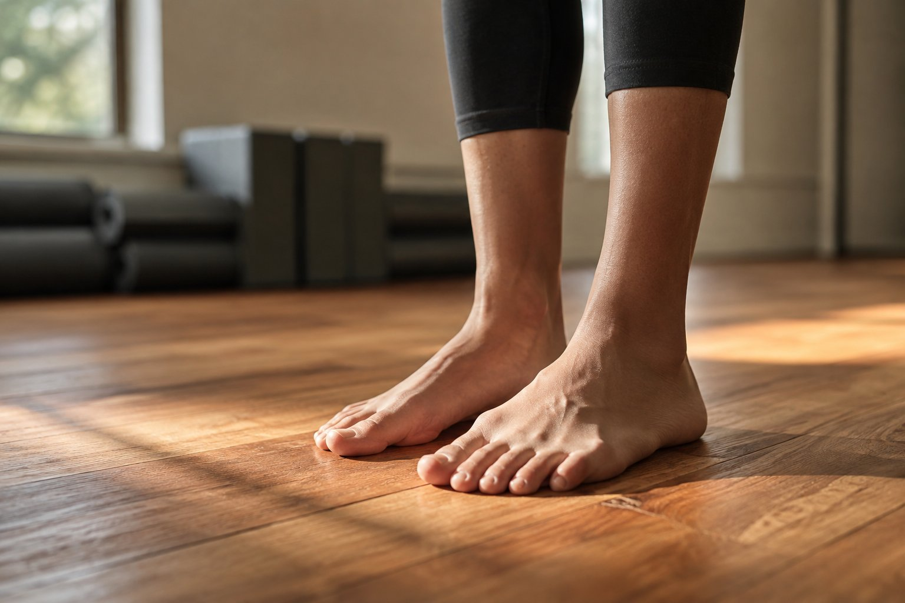

腳是體態的地基：鞋子與足弓如何牽動全身骨盆脊椎

- 肩膀緊、腰部痠、膝蓋卡卡時，多數人習慣頭痛醫頭，卻往往忽略了每天承受數萬公斤衝擊的最底層地基——「雙腳」。
- 人體重量與地面反作用力是透過「足弓三角」層層向上傳導，足弓塌陷會連鎖引發脛骨內旋、膝蓋內扣與骨盆失衡。
- 鞋子是身體與地面的中介介面，過軟無支撐、鞋跟過高或鞋底異常偏磨，都是日常重心失衡的即時警訊。
- 足底內在肌群終身可鍛鍊，透過赤腳扎根與壁繩懸掛整體連動，能重新把下半身地基的穩定度建立起來。
當肩膀緊繃、下背隱隱作痛、或是上下樓梯膝蓋不順時，我們很自然地會去按摩肩頸、鍛鍊核心、或是穿上護膝。但有一個地方，每天默默承受著人體體重數倍的著地衝擊力，卻最容易被大眾徹底忽略——那就是我們的雙腳與足弓。腳是整個身體大廈的地基，地基只要產生幾毫米的傾斜或塌陷，上面的樓層（膝蓋、髖關節、骨盆、脊椎直到頭頸）就必須全數歪斜代償來維持平衡。這篇文章帶你從最底層的足底力學看懂體態問題的根源。
身體是由下往上堆疊的動力鏈
在站立與行走時，雙腳是人體唯一與地面接觸的支撐點。重力與地面反作用力透過骨骼力線一層一層向上傳遞：腳掌三點 → 踝關節 → 脛骨膝蓋 → 股骨髖關節 → 骨盆 → 脊椎。健康的足底由 26 塊骨骼、韌帶與深層肌肉共同組成「內側縱弓、外側縱弓與前橫弓」，猶如天然的避震彈簧。一旦足弓因肌力不足或韌帶鬆弛而過度塌陷（旋前 Pronation），這組避震彈簧失去張力，震盪與傾斜便會毫無保留地向上傳遞，迫使上層關節用非正常的摩擦角度去硬扛。
足弓塌陷（內側倒地）→ 距下關節外翻 → 帶動小腿脛骨往內旋轉 → 膝關節產生內扣應力（X 型腿傾向）→ 股骨內旋使骨盆過度前傾或單側下墜 → 腰椎前凸曲度增加、下背肌筋膜持續過勞。這條清晰的「由下而上連鎖代償」，說明了為什麼許多人反覆按摩腰部卻總是好不了——因為問題真正的起點，深埋在腳底下。
鞋子，是你與地面之間的關鍵介面
現代人一天穿鞋的時間動輒超過 8 到 10 個小時，鞋子的結構實質上決定了腳掌如何受力、重心落在何處。日常選鞋與穿鞋時，有三個重要指標值得我們自我檢視：
- 鞋底磨損極度不對稱：拿出你穿了半年的舊鞋底觀察——正常的著地磨損應在腳後跟外側微磨、前掌中央均勻磨損；若鞋後跟內側嚴重磨平、或單邊磨損程度遠高於另一邊，往往代表該側足弓塌陷或左右重心分配嚴重不均。
- 過度柔軟、毫無抗扭轉力度的鞋子：許多人以為鞋底「越軟越好」，但過於鬆軟像蛋糕般的鞋墊缺乏足弓支撐與足跟包覆抗扭性，容易使腳踝在行走時頻繁晃動，足底小肌肉反而因過度代償抓地而更快疲乏痠痛。
- 過高鞋跟與狹窄鞋楦：鞋跟高度會將身體重心被動向前推擠，使小腿後側腓腸肌與下背豎脊肌長年處於縮短痙攣狀態；過窄鞋頭壓迫大腳趾外翻，進一步破壞足弓三點受力架構。
腳的深層力量，是可以重新被練回來的
很多人以為足弓一旦塌陷就只能靠訂製硬鞋墊被動支撐。然而，醫學與運動生物力學證實：足底擁有深層的「足底內在肌群（Intrinsic Foot Muscles）」，它們具備自主收縮與彈性能力。由於現代人長期被過度保護的硬底鞋包裹，足底感覺受器與微肌群退化鈍化。在安全防滑的環境下進行赤腳本體感覺練習，學習透過「短足運動（Short Foot Exercise）」將大腳趾球、小腳趾球與腳跟三點主動吸附地面，足弓的天然彈性就能逐步恢復。壁繩瑜伽在練習站姿時，極度重視「從足底三點均勻扎根、將地面反作用力沿著小腿大腿內側向上提拔」的整體張力鏈，能安全扎實地將身體的地基重新穩固起來。
想看懂你的下肢重心與骨盆是否偏向某一側？
足底地基的不對稱，往往在骨盆高低與肩膀水平線上留下清晰的代償痕跡。AI 體態檢測運用 2D 體態幾何參考線，客觀量化站姿時的垂直重力垂線與肩髖傾角，由專業老師當面解讀，幫你看清地基與脊椎的相互關聯。
預約首次 NT$299 AI 體態檢測想了解足弓如何連動影響膝關節與骨盆，請接著看：膝蓋卡卡不一定在膝蓋？先看懂髖關節活動度與下肢代償的關係，或走路也看得出體態？從你的日常步態，讀懂身體的用力習慣與關節代償。
本文為體態與日常動作習慣的一般衛教分享，非醫療診斷或治療。若早晨踏地第一步足跟出現劇烈撕裂刺痛、第一蹠趾關節紅腫熱痛、或下肢足部伴隨持續麻木無力感，請及時諮詢骨科、復健科或足踝專科醫師進行鑑別診斷。
常見問題
為什麼雙腳被稱為全身體態的最底層地基？
當人體直立站立或行走時，地面的反作用力由足底三點支撐開始，依序向上傳導：腳掌→踝關節→膝關節→髖關節→骨盆→脊椎與肩頸。如果足弓失去彈性塌陷或重心單側偏移，地基的歪斜會迫使上方所有關節逐層產生代償扭轉，引發看似與腳無關的慢性腰痠或膝蓋磨損。
足弓塌陷（扁平足傾向）是如何一路向上影響到腰椎的？
當內側縱弓塌陷過度旋前（Pronation）時，距下關節會向內傾斜，連帶帶動小腿脛骨向內旋轉，進而使膝關節向內扣（形成 X 型腿應力）；大腿骨跟著內旋後會牽動骨盆過度前傾或單側下墜，最後迫使腰椎前凸曲度增加、下背肌群持續過勞痙攣，這就是典型的由下而上動力鏈代償。
日常穿鞋挑選有什麼保護足弓與體態的重點？
第一，避免長期穿著鞋跟過高的高跟鞋，否則會將重心過度壓在前腳掌與腰椎；第二，避免鞋底過於薄平柔軟、毫無抗扭轉支撐的平底便鞋，這會讓足弓在走硬路面時缺乏緩衝支撐；第三，定期檢查常穿鞋子的鞋底磨損狀態，若單邊鞋跟內側或外側異常嚴重磨平，通常反映出左右重心分配嚴重不對稱。
足底的小肌肉真的可以透過練習重新鍛鍊嗎？
可以。足底擁有豐富的內在肌群（如足底屈肌群與足弓支撐肌肉），現代人因長年穿著包覆過緊的硬底鞋，導致足底肌肉用進廢退、本體感覺遲鈍。透過在安全防滑的木地板上赤腳練習足底抓地（短足運動 Short Foot）、感受大腳趾球、小腳趾球與腳跟的三腳架穩定扎根，能有效喚醒足弓的動態彈性。
足部出現刺痛或懷疑嚴重扁平足時，該如何處理？
若早晨起床下床第一步足跟出現如針刺般劇烈撕裂痛（可能為急性足底筋膜炎），或是第一蹠趾關節突發紅腫熱痛（需排除痛風），請優先諮詢骨科、復健科或足踝專科醫師進行醫療檢查。AI 體態檢測主要提供站姿重心與全身排列參考線，非醫療診斷工具。